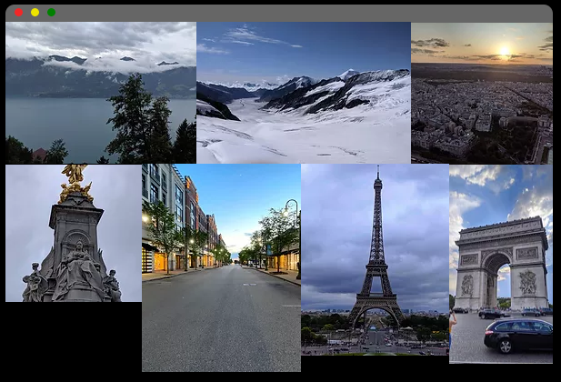
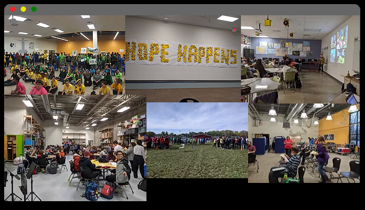
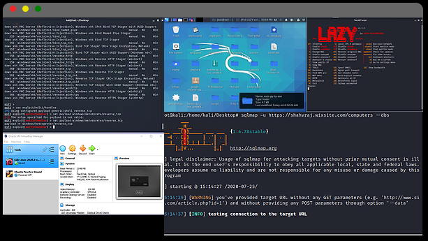
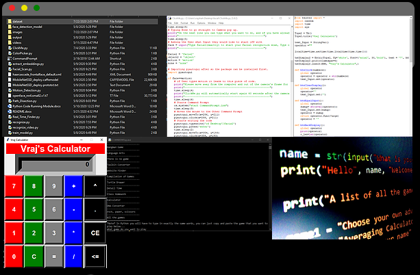

Interests
Hello. Welcome. Make sure to check out some interests I have. I have five: Photography, Piano, Volunteering, Cyber Security, and Programming. Scroll down to learn more about what I do with these interests.
PHOTOGRAPHY
I love to take photos of different scenery types. Below shows some of my best photos taken in Europe. I hope to continue my passion for photography in college and my future career.
VOLUNTEERING
Throughout high school, I volunteered a total of 500+ hours. I love to help different kinds of people, and learn more about their experiences, which is why I volunteer so much. I hope to volunteer many more hours of my time in the future to help other individuals.
PIANO
Piano makes me more motivated and allows me to create new ideas if I play the piano. I'm not the best at piano, but it is a passion of mine, and I have also created a simple motivational song. Below you can watch the song, hope you enjoy! (P.S. For some reason the song does not play, sorry.)
CYBER SECURITY
I started competing in Cyber Security competitions in the 8th grade. From then on I fell in love with it. I am fluent in Linux, and I can do some bash scripting. I have advanced in many ethical hacking/cyber-security competitions throughout high school. I am now trying to work towards the CEH certificate, so I can grasp a better understanding of security.
PROGRAMMING
I started coding when I was 13 and from then on I really enjoyed it. I use python for most of my projects. I have made about 30+ programs to do different tasks. My most recent and proud project was a facial recognition software. I used python OpenCV and machine learning to create this software. When I graduate I would like to go into a field involving cybersecurity and computer science.
